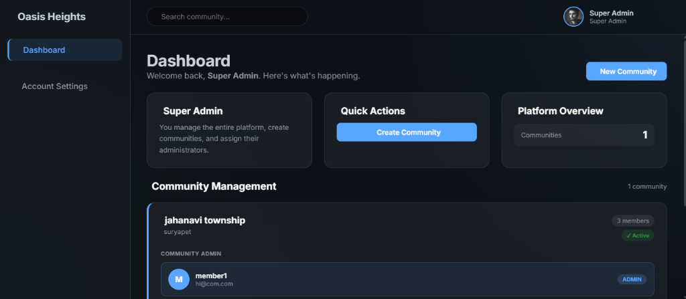

Gated Community Management System
Residential communities struggle with fragmented communication — notices go unread, visitor logs are manual, polls happen over WhatsApp, and property listings have no organized system. Residents and admins waste time on coordination that should be automatic.
A full-stack web application that gives gated communities a single digital platform. Admins manage the community; residents interact with it. Every feature was designed around actual community workflows, not abstract CRUD operations.
Key Features
Building this taught me what "full-stack" actually means in practice — not just front end and back end, but thinking about authentication flows, database schema design, API contract design, and UX all at once. The multilingual PWA requirement pushed me to understand service workers and internationalization beyond theory.
